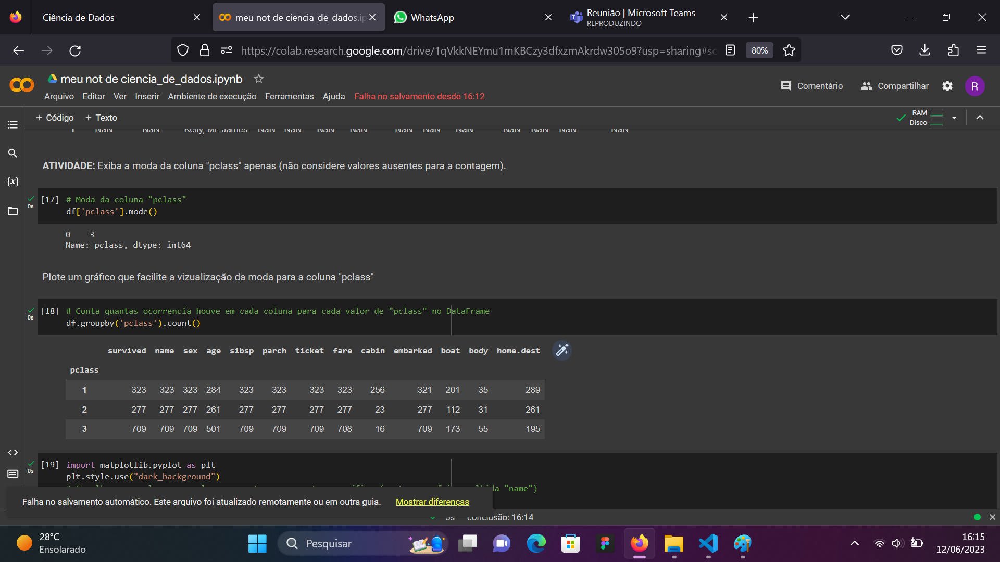
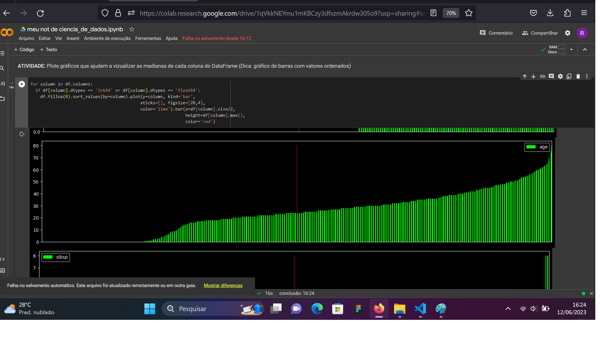
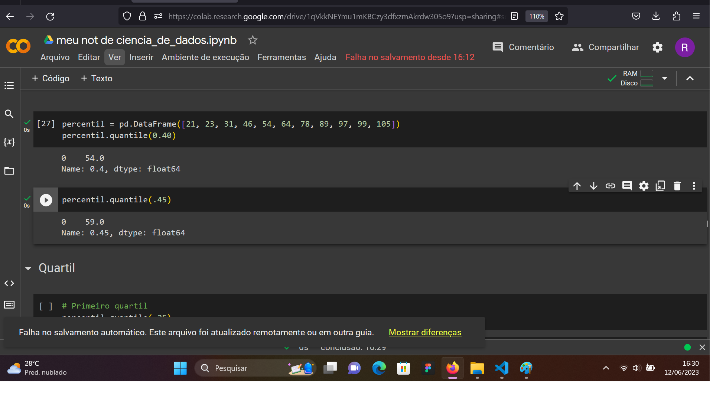
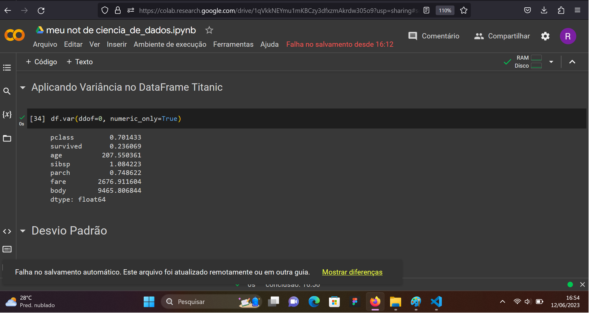
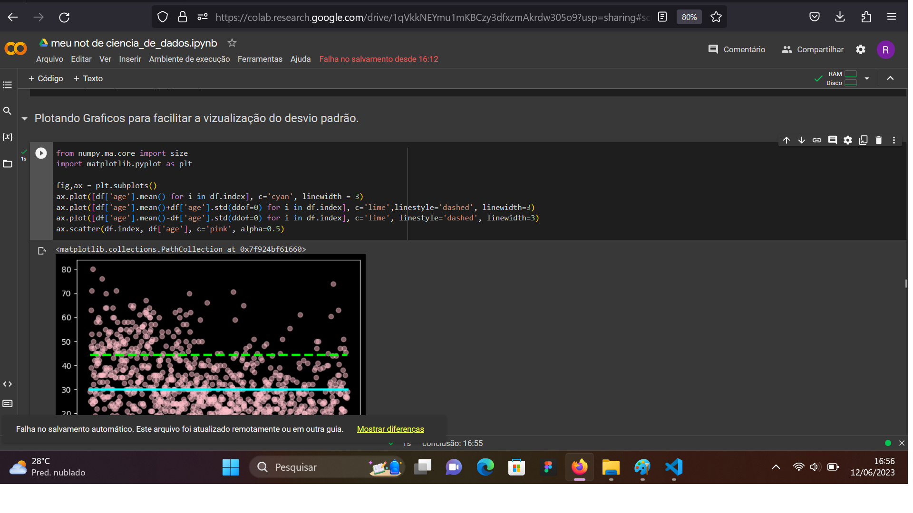

A ciência de dados é uma disciplina que envolve a obtenção, organização, análise e interpretação de grandes conjuntos de dados para extrair informações que podem auxiliar na tomada de decisões. Ela combina técnicas estatísticas, matemáticas e de programação com conhecimento de domínio para resolver problemas complexos e gerar conhecimento.
Nesse primeiro exercício foi proposto que fosse gerado um data frame no Google Colab com a biblioteca Pandas contendo os dados dos alunos da sala, como Nome, sexo, etc.
Feito isso, era para separar amostras dos dados de acordo com os critérios:
- Uma amostra aleatória
- Uma amostra sistemática
- Duas amostras estratificas, uma por squad e outra por sexo.
Amostragem
Amostragem é o processo de seleção de uma parte representativa de uma população maior para análise. Em outras palavras, é a prática de estudar uma amostra de indivíduos, objetos ou eventos de um grupo maior.
Existem vários métodos de amostragem comumente utilizados, incluindo:
- Amostragem aleatória simples: Cada elemento da população tem uma chance igual de ser selecionado para a amostra. É como sortear nomes de uma caixa.
- Amostragem estratificada: A população é dividida em subgrupos ou estratos e, em seguida, uma amostra aleatória simples é selecionada de cada estrato proporcionalmente ao seu tamanho. Isso garante uma representação equitativa de cada estrato na amostra.
- Amostragem sistemática: Um padrão sistemático é seguido para selecionar elementos da população. Por exemplo, a cada k-ésimo elemento pode ser selecionado após a escolha aleatória do primeiro elemento.
A amostra pode ser de dois tipos:
Tipos de amostra
Segue abaixo imagens com os resultados do exercício, para verificar mais calma os códigos basta clicar no botão abaixo e ter acesso ao Colab do exercício.
Nesse segundo exercício foi proposto que fosse gerado aplicado conceitos de estatísticos no banco de dados do Tiotanic, importado do MS Excel com a extensão ".csv".
Os conceitos estudados foram:
- Moda
- Mediana
- Média
Moda
Moda é um conceito estatístico que se refere ao valor ou valores que ocorrem com maior frequência em um conjunto de dados. Em outras palavras, a moda é o elemento mais comum em um conjunto de observações.
A moda pode ser útil para identificar o valor mais representativo em um conjunto de dados
Moda no BD
Segue abaixo um código de exemplo de moda em python.

Moda na coluna "pclass" do BD Titanic
Mediana no BD
A mediana é uma medida estatística que representa o valor central de um conjunto de dados ordenados.
Ela é útil quando se deseja ter uma noção do valor central de um conjunto de dados, especialmente quando existem valores discrepantes que podem distorcer a média.

Mediana na coluna "pclass" do BD Titanic
Média no BD
A média é uma medida de tendência central que representa o valor médio de um conjunto de dados. É calculada somando todos os valores do conjunto e dividindo pelo número total de elementos.
Percentil, quartil e qui-quadrado
Percentil
O percentil é uma medida estatística que divide um conjunto de dados ordenados em 100 partes iguais. Ele é utilizado para identificar a posição relativa de um valor em relação ao conjunto de dados.

Percentil com Python
Quartil
os quartis são medidas que dividem um conjunto de dados em quatro partes iguais, cada uma contendo 25% dos dados. Essas partes são chamadas de primeiro quartil (Q1), segundo quartil (Q2) e terceiro quartil (Q3).
O primeiro quartil (Q1) é o valor abaixo do qual 25% dos dados estão localizados. O segundo quartil (Q2) é equivalente à mediana, ou seja, é o valor que divide o conjunto de dados ao meio. O terceiro quartil (Q3) é o valor abaixo do qual 75% dos dados estão localizados.
A variância é uma medida estatística que descreve a dispersão ou a variabilidade dos dados em relação à média. Ela indica a extensão na qual cada valor no conjunto de dados difere da média.

Variância com Python
Desvio padrão
O desvio padrão é uma medida estatística que indica a dispersão dos dados em relação à média. Ele representa a raiz quadrada da variância e fornece uma estimativa da dispersão média dos valores em relação à média.

Desvio padrão com Python
Segue abaixo imagens com os resultados do exercício, para verificar mais calma os códigos basta clicar no botão abaixo e ter acesso ao Colab do exercício.
Outro ponto muito importante visto na disciplina são os modelos de hipóteses.
O mais importante estudado foi o Qui-quadrado. Este compara as frequências observadas de diferentes categorias com as frequências esperadas, assumindo que não há associação entre as variáveis.
O valor obtido do teste qui-quadrado é comparado com um valor crítico da distribuição qui-quadrado, com base no número de graus de liberdade (número de categorias).
Se o valor calculado for maior que o valor crítico, rejeita-se a hipótese nula de independência entre as variáveis.
Probabilidades
Probabilidade é a medida numérica da possibilidade de ocorrer um evento específico. É utilizado para quantificar a incerteza associada a um evento ou resultado.
No curso foi vitos alguns modelos de probabilidades como:
- Modelo binomial
- Regressão logística
Graus de liberdade
Os graus de liberdade são usados para descrever a quantidade de informação disponível para estimar ou testar uma hipótese estatística. Em geral, os graus de liberdade são determinados pela diferença entre o tamanho da amostra e o número de restrições impostas aos dados. Por exemplo, em um teste x alunos para comparação de médias, os graus de liberdade são dados pelo tamanho da amostra menos 1.
O cálculo é um ramo fundamental da matemática que se concentra no estudo de mudanças e taxas de variação. Ele é dividido em duas partes principais: o cálculo diferencial e o cálculo integral.
O cálculo diferencial trata das taxas de variação instantâneas e da análise de funções. Ele envolve o estudo de derivadas, que medem a taxa de variação de uma função em relação a uma variável independente. As derivadas são usadas para determinar a taxa de mudança de uma função em um determinado ponto, a inclinação de uma curva em um ponto específico e para resolver problemas relacionados a taxas de crescimento, velocidade, otimização e muito mais.
O cálculo integral, por sua vez, lida com a acumulação de quantidades e a determinação de áreas e volumes. Ele envolve o estudo de integrais, que são usados para calcular a área sob uma curva, a soma de infinitos infinitésimos, a acumulação de quantidades em um intervalo e a resolução de problemas relacionados à área, volume, trabalho, probabilidade e outros conceitos
Estudo de funções
Expressões algébricas formadas por números (coeficientes) e letras (artes literais). As letras representam valores desconhecidos
Existem funções polinomiais de vários graus, as mais conhecidas são a do primerio e segundo grau, funções polinomiais, funções exponenciais, funções logarítmicas, funções trigonométricas.
O grau da função se dá pela potência de sua primeira variável.
Limites
O limite é usado para descrever o valor que uma função ou sequência se aproxima à medida que a variável independente se aproxima de um determinado ponto.
Existem diferentes tipos de limites, incluindo limites laterais (um limite pela esquerda ou pela direita), limites infinitos (quando a função se aproxima de infinito positivo ou negativo), e limites no infinito (quando a variável independente se aproxima do infinito). Além disso, o cálculo de limites envolve várias técnicas, como simplificação algébrica, racionalização, fatoração e uso de propriedades dos limites.
Segue abaixo alguns exercísios de limites desenvolvidos em sala de aula.
Derivadas
A derivada é um conceito fundamental que descreve a taxa de variação de uma função em relação à sua variável independente
A derivada de uma função fornece informações importantes sobre a função, incluindo a inclinação da reta tangente em um ponto, a taxa de variação instantânea da função em um ponto e a direção da concavidade da curva. Além disso, as derivadas são usadas para resolver uma variedade de problemas, como otimização, análise de crescimento, determinação de pontos críticos, estudo de taxas de variação, entre outros.
Segue abaixo alguns exercísios de limites desenvolvidos em sala de aula.
Integral
A integral é um conceito fundamental que permite calcular a área sob uma curva, bem como determinar a soma acumulada de uma quantidade ao longo de um intervalo. A integral é a operação inversa da derivada e é usada para resolver uma variedade de problemas em matemática, física, engenharia, economia e outras áreas.
Existem dois tipos principais de integrais: a integral definida e a integral indefinida.
Uma excelente ferramenta de entrada no mundo de análise de dados é o Microsoft Power BI.
Ela proporciona a possibilidade de linkar diretamente com o banco de dados para fazer tratamento dos dados, cáculo de medidas e contrução de dashboards que irá ser fundamental para líderes tomarem decisões com base nas informações extraídas dos dados brutos.
O Senai Gaspar Ricardo Júnio oferece um excente curso na área. Para iniciar ou aprofundar conhecimentos mais técnicos sobre como trabalhar com banco de dados, clique no link abaixo.